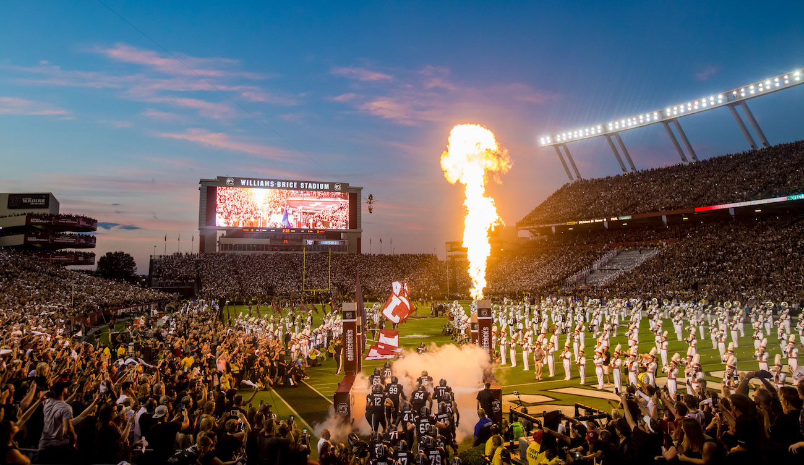
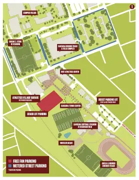
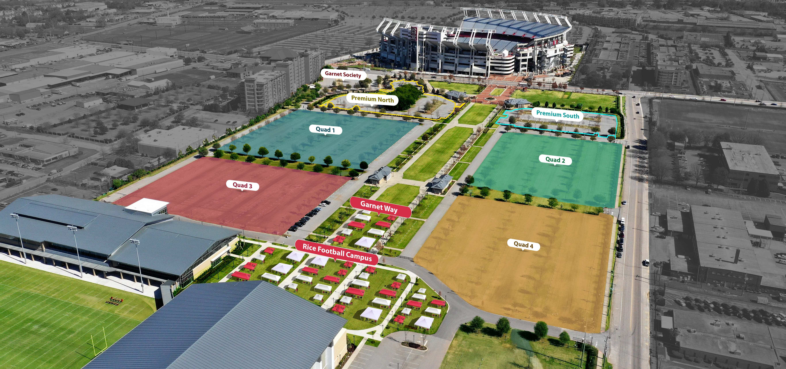
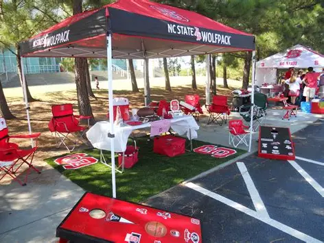
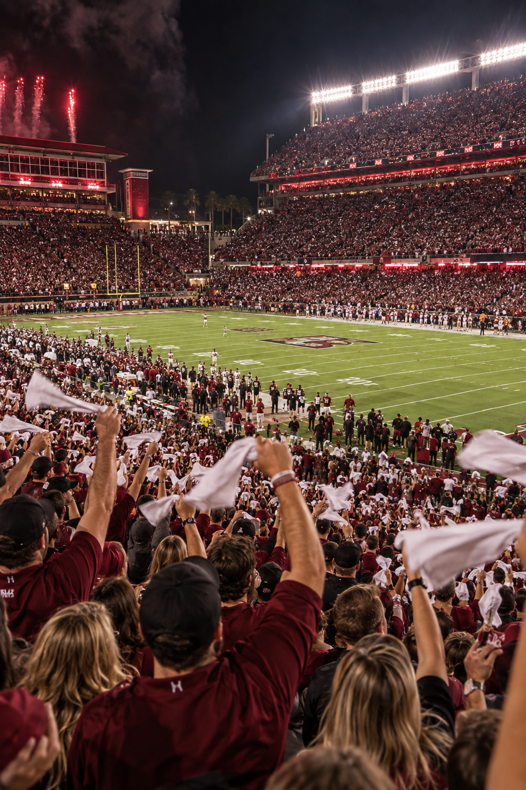

The Ultimate Fan Portal
GameCock
Game Day Guide
Your Ultimate Guide to South Carolina Football Saturdays. From Williams-Brice tailgate spots to the legendary SandStorm
● COUNTDOWN TO KICKOFF
The Next Road Battle
GAMECOCKS
VS
ALABAMA
SEC MATCHUP
September 26, 2026 · 7:00 PM
Bryant-Denny Stadium · Tuscaloosa, AL
● GameDay Logistics
Parking & Tailgating Guide
Everything you need to plan your arrival and pre-game setup around Williams-Brice.

Parking Map
Explore reserved lots, public parking garages, and shuttle pickup routes around the fairgrounds.
Explore Map
Tailgating Zones
Find the best tailgating areas, arrival tips, and game-day atmosphere for your crew.
Find Zones
What To Bring
Review stadium policies, weather checklists, and essential gear for the perfect Carolina tailgate.
Checklist● LEGENDARY TRADITION
The Sandstorm
Tradition
Experience Williams-Brice Stadium erupting to Darude's “Sandstorm” as 80,000 screaming fans wave white rally towels. Introduced in 2001, it remains one of the most electric intro sequences and home-field advantages in college football.
Watch Video ▷